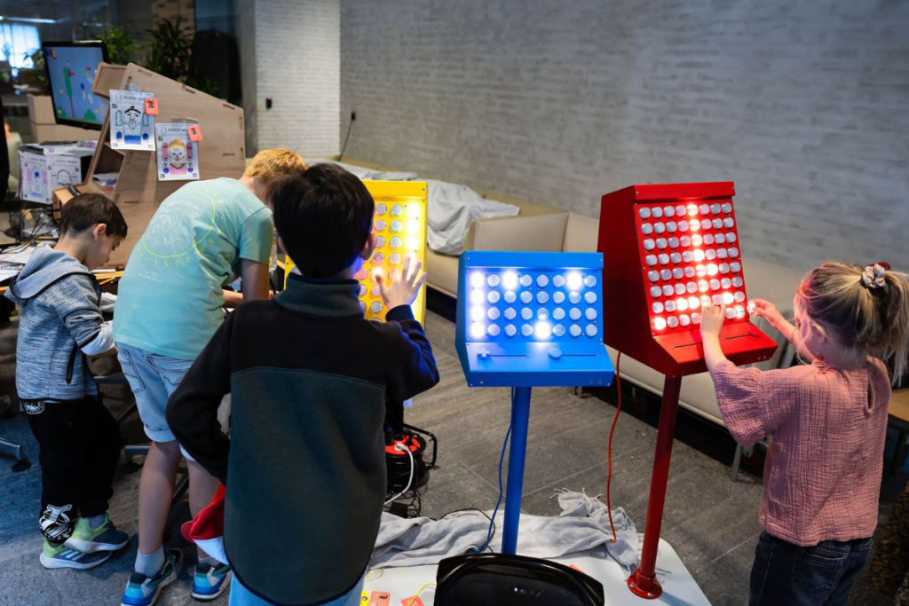

The MKRDAYS Eindhoven
Eindelijk was het dan zover. Zaterdag en zondag stonden helemaal in het teken van de makers.

Wij stonden op de fair met twee interactieve machines. The Side Quest Rave kon natuurlijk niet wegblijven. Daarnaast stonden we met de arcade-kast voor jonge uitvinders. Beide waren een groot succes bij het jongere publiek. Stiekem vonden de vaders het ook super interessant.
Het Stadhuis was prachtig aangekleed en beide dagen waren top georganiseerd. Er kon genoeg gedemonstreerd worden, maar er was ook tijd om contacten te leggen. We bedanken René voor de organisatie en de gemeente Eindhoven voor het mogelijk maken van het project. Tot volgend jaar?